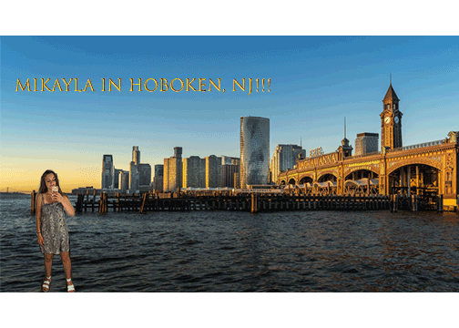

Mikayla Flynn's Biography
My name is Mikayla Flynn and I am majoring in Information Management and Technologies. My concentration is in web design so I am interested in learning about how websites are designed and the creative components behind creating a website. I am also interested in information security so I want to learn more about how data is protected on websites and what can be done to prevent hackers from attacking.
I have learned a lot about Python from IST 256 so I am familiar with the coding side of websites. I have also become very familiar with a lot of Microsoft applications and how to use them throughout my time at Syracuse University.
Another skill of mine is that I am a leader, I have had to become a leader in many of the jobs and roles that I have held throughout high school and college.
Personal Information
Outside of work I love spending time with my friends and I am very passionate about music. I can spend hours talking about different artists and my music taste is very diverse.
I am very excited to begin IST 263 as one of the first classes for my web design concentration.
Favorite Artists
- Cage the Elephant
- The Strokes
- Tame Impala
- Arctic Monkeys
- Frank Ocean